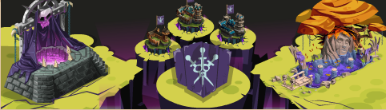
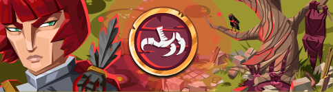
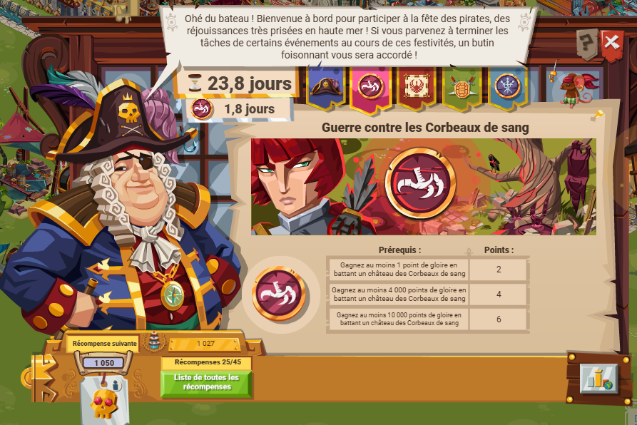
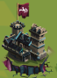

Étrangers et corbeaux de sang
Le point central de cet évènement est celui des points de gloire. Comme tous les évènements, il y a plusieurs niveaux de difficultée :
- facile
- facile+
- intermédiare
- intermédiare+
- difficile
- difficile+
- expert
- expert+
- maître
- maître+
- grand maître
Ces différentes difficultées sont choisies par le joueur au début de l'évènement, après le mail automatique de GGE.
Les 4 premières (facile, facile+, intermédiaire et intermédiaire+) sont débloquées de base, les autres sont débloquées lorsqu'il y a eu assez d'attaque sur des camps/châteaux de niveau de difficultées inférieure (d-1). La progression est visible dans l'onglet succès.
Pour plus de détail, voir l'encadré.
Le prinicpe est le suivant : on choisis une difficultée, puis on attaque des château. La distance entre votre cp et un château d'étranger/corbeaux est de 50 cases. Il est donc plus que recommandé d'utiliser des plumes lors d'espionnage ou d'attaque.
Il faut également pretter attention au nombre de points pris en compte par les LTPE.
En effet, attaquer un camp rapporte 1 à 2 points, dépenser la monnae de l'event 3 points par x monnaie dépensée. Pour les étrangers/corbeaux, c'est 2 à 6 points/attaque.

Corbeaux de sang


C'est un évènement qui est comparable à celui des étrangers, à la différence que le drapeau est différent.
La miniature du château aussi donc.

Comme l'évènement des étrangers, il n'y a pas de jetons ou tablette, seulement des points de gloires. Donc moins de récompenses, mais les points de gloire ont leur importance (voir les titres de gloire).
Il est bien évidemment possible d'optimiser le nombre de points de gloire reçu après une attaque sur un château, comme :
- avoir un monument
- utiliser des engins spécifiques
- utiliser les bons équipements
- avoirun effet de blason
Utiliser Toril sinon Sasaki/Horatio
Acheter des objets pour booster les effets des commandants et booster les objets